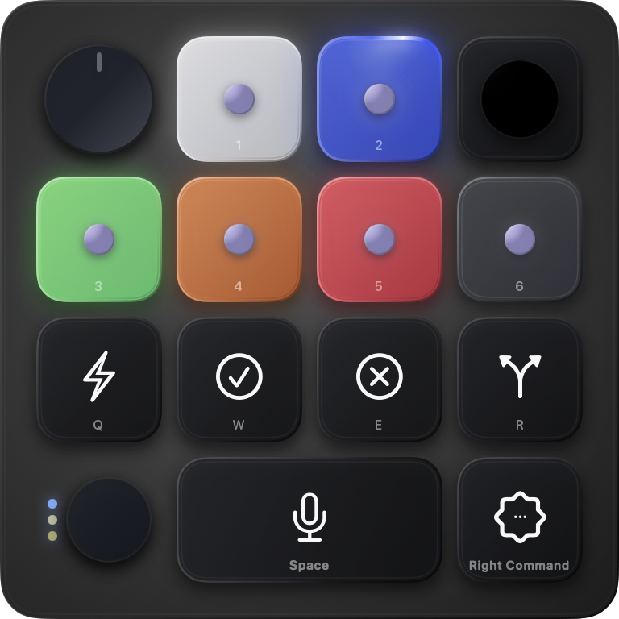
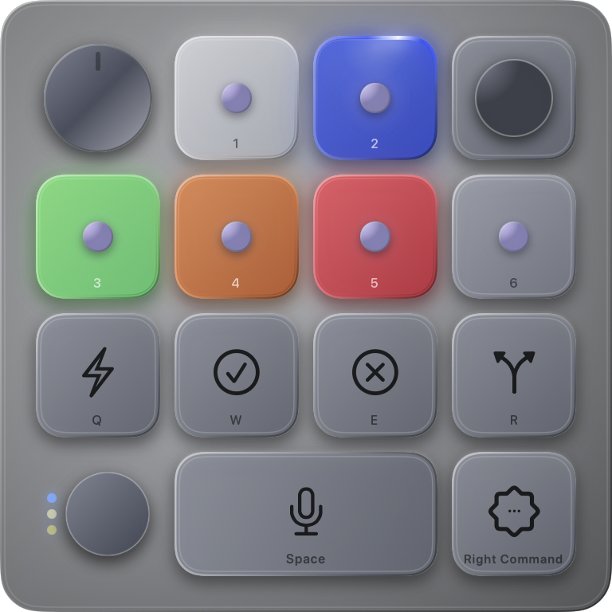

See all six agents.
Live menu-bar indicators show idle, thinking, complete, input-needed, and error states without opening another window.
Hold Fn + Control to use the Codex Micro controls from your Mac keyboard. Release the shortcut to return to normal typing.
macOS 14+ · Apple silicon and Intel


KeySwitch maps the physical controls Codex already understands to the keyboard already under your hands.
Live menu-bar indicators show idle, thinking, complete, input-needed, and error states without opening another window.
Hold or toggle your activation shortcut. The layer can close automatically after inactivity, and Esc closes it immediately.
Change a Micro keycap or action in Codex and KeySwitch updates its HUD. KeySwitch maps Mac keys to the corresponding Micro controls.
KeySwitch has no account, analytics, or telemetry. The HUD does not take keyboard focus and closes when the layer exits.
Try the four sizes in light or dark mode.
The source code, architecture notes, privacy details, and issue tracker are available on GitHub.
1. Press a mapped key
2. KeySwitch sends the matching Micro control
3. Codex performs the selected actionUse Codex Micro controls without buying another keyboard.
Download for macOS